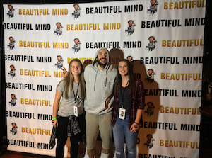

| Questions | Answers |
|---|---|
| If you could live anywhere, where would it be? | Somewhere in Colorado. I think Golden, Colorado is beautiful. |
| Who is your favorite author? | F. Scott Fitzgerald |
| Who are your favorite artists/bands? | The Beatles, Fleetwood Mac, ABBA, David Bowie, Queen, George Harrison, Frank Sinatra, The Everly Brothers, Bastille, Ellie Goulding, Jon Bellion, lovelytheband, Glades |
| What is your biggest fear? | Clowns |
| What was the last movie you saw? What did you think? | Bohemian Rhapsody, it was amazing! I would definitely recommend it |
| What is one of your favorite memories? | Meeting Jon Bellion, my favorite (current) singer!  |
| What is your favorite animal at the zoo? | Elephants are my favorite animal in general, but I also like seeing the monkeys |
| What is your favorite holiday? | Thanksgiving |
| What is your favorite food? | Sushi, or any Chinese/Thai/Korean food |
| Are you an introvert or extrovert? | Very much an introvert |